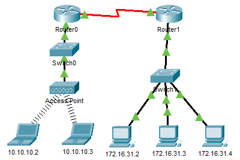

AIM
- Examine an ARP Request
- Examine a Switch MAC Address Table
- Examine the ARP Process in Remote Communication
TOPOLOGY

ADDRESSING TABLE
| Device |
Interface |
MAC Address |
Switch Interface |
| Router0 |
G0/0 |
0001.6458.2501 |
G0/1 |
| S0/0/0 |
N/A |
N/A |
| Router1 |
G0/0 |
00E0.F7B1.8901 |
G0/1 |
| S0/0/0 |
N/A |
N/A |
| 10.10.10.2 |
Wireless |
0060.2F84.4AB6 |
F0/2 |
| 10.10.10.3 |
Wireless |
0060.4706.572B |
F0/2 |
| 172.16.31.2 |
F0 |
000C.85CC.1DA7 |
F0/1 |
| 172.16.31.3 |
F0 |
0060.7036.2849 |
F0/2 |
| 172.16.31.4 |
G0 |
0002.1640.8D75 |
F0/3 |
PAPRT1: EXAMINE AN ARP REQUEST
STEP 1: SGENERATE ARP REQUESTS BY PINGING 172.16.31.3 FROM 172.16.31.2
- Click 172.16.31.2 and open the Command Prompt.
- Enter the arp -d command to clear the ARP table.
- Enter Simulation mode and enter the command ping 172.16.31.3. Two PDUs will be generated. The ping command cannot complete the ICMP packet without knowing the MAC address of the destination. So the computer sends an ARP broadcast frame to find the MAC address of the destination.
- Click Capture/Forward once. The ARP PDU moves Switch1 while the ICMP PDU disappears, waiting for the ARP reply. Open the PDU and record the destination MAC address.
Is this address listed in the table above? No
What is the IP address of the device that accepted the PDU? 172.16.31.3
- Click Capture/Forward to move the PDU to the next device.
How many copies of the PDU did Switch1 make? 3
What is the IP address of the device that accepted the PDU? 172.16.31.3
- Open the PDU and examine Layer 2.
What happened to the source and destination MAC addresses?
Source became destination, FFFF.FFFF.FFFF turned into MAC address of 172.16.31.3
- Click Capture/Forward until the PDU returns to 172.16.31.2.
How many copies of the PDU did the switch make during the ARP reply? 1
STEP 2: EXAMINE THE ARP TABLE.
- Note that the ICMP packet reappears. Open the PDU and examine the MAC addresses.
Do the MAC addresses of the source and destination align with their IP addresses? Yes
- Switch back to Realtime and the ping completes.
- Click 172.16.31.2 and enter the arp –a command.
To what IP address does the MAC address entry correspond? 172.16.31.3
In general, when does an end device issue an ARP request?
When it does not know the receiver’s MAC address.
PAPRT2: EXAMINE A SWITCH MAC ADDRESS TABLE
STEP 1: GENERATE ADDITIONAL TRAFFIC TO POPULATE THE SWITCH MAC ADDRESS TABLE.
- From 172.16.31.2, enter the ping 172.16.31.4 command.
- Click 10.10.10.2 and open the Command Prompt.
- Enter the ping 10.10.10.3 command.
How many replies were sent and received? 4 sent, 4 received.
STEP 2: EXAMINE THE MAC ADDRESS TABLE ON THE SWITCHES.
- Click Switch1and then the CLI tab. Enter the show mac-address-table command.
Do the entries correspond to those in the table above? Yes
- Click Switch0, then the CLI tab. Enter the show mac-address-table command.
Do the entries correspond to those in the table above? Yes
Why are two MAC addresses associated with one port?
Because both devices connect to one port through the Access Point.
PART 3: EXAMINE THE ARP PROCESS IN REMOTE COMMUNICATIONS
STEP 1: GENERATE TRAFFIC TO PRODUCE ARP TRAFFIC.
- Click 172.16.31.2 and open the Command Prompt.
- Enter the ping 10.10.10.1 command.
- Type arp –a.
What is the IP address of the new ARP table entry? 172.16.31.1
- Enter arp -d to clear the ARP table and switch to Simulation mode.
- Repeat the ping to 10.10.10.1.
How many PDUs appear? 2
- Click Capture/Forward. Click the PDU that is now at Switch1.
What is the target destination IP destination address of the ARP request? 172.16.31.1
- The destination IP address is not 10.10.10.1.
Why?
The gateway address of the router interface is stored in the IPv4 configuration of the hosts. If the receiving host is not on the same network, the source uses the ARP process to determine a MAC address for the router interface serving as the gateway.
STEP 2: EXAMINE THE ARP TABLE ON ROUTER1.
- Switch to Realtime mode. Click Router1 and then the CLI tab.
- Enter privileged EXEC mode and then the show mac-address-table command.
How many MAC addresses are in the table? Why?
Zero, this command means something completely different than the switch command show mac address-table.
- Enter the show arp command.
Is there an entry for 172.16.31.2? Yes
What happens to the first ping in a situation where the router responds to the ARP request? Request timed out.
RESULT
Examined and verified an ARP Request, Switch MAC Address Table, and the ARP Process in Remote Communication